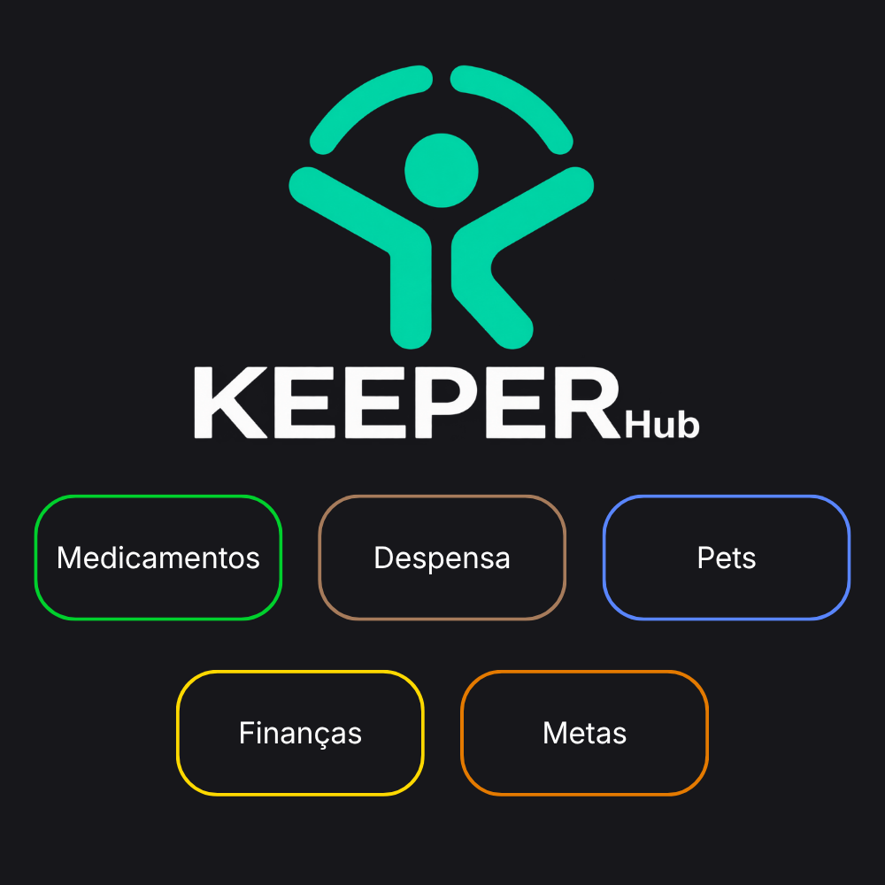

Featured Project
KeeperHub

Organization
KeeperHub is a central hub designed to organize household management. It was built with a modular architecture to bring different utilities together into a single application. Among its modules is the Medication Tracker, designed to simplify information management and visualization.
- Development of an organized, modular architecture.
- Creation and evolution of the Medication Tracker module.
- Use of Git and branching strategies for workflow organization.
- Responsive interface with reusable components.
- Acted as database manager and codebase organizer for the project.
Through this project, I developed strong leadership skills, critical thinking, and a proactive mindset.